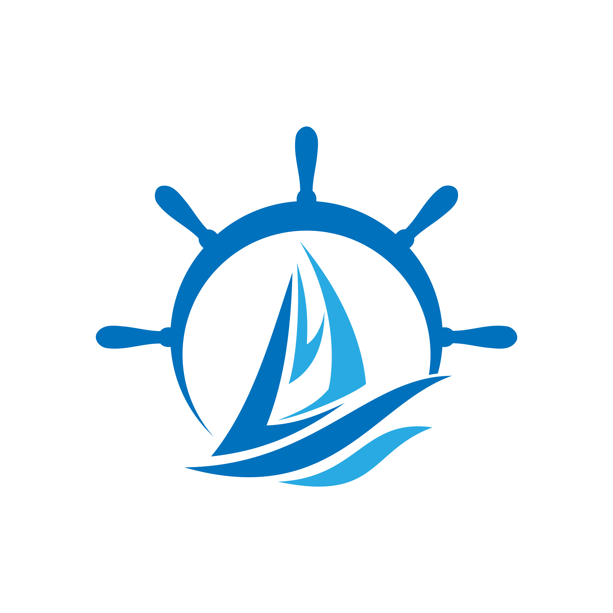

← 返回作品集
宁波乐洋海运 LOGO 设计
一、项目基础信息
行业属性：国内沿海及长江中下游成品油航运、船舶代理、货运代理、船舶租赁维修等综合航运服务

二、设计理念与创意解析
核心创意：字母融合船舶造型
本次 LOGO 以品牌拼音首字母 L（乐）+ Y（洋）为核心视觉基底，将两个字母进行艺术化重构，整体轮廓塑造为航行中的船舶形态，实现品牌名称、行业属性、视觉符号三者一体化融合，寓意乐洋海运以航运为根基，扬帆远航、立足行业、走向广阔市场。
1. 图形释义
整体造型凝练为一艘前行的航运船舶，船体线条由字母 L 与 Y 无缝衔接构成：L 勾勒出船身主体轮廓，Y 巧妙化作船首与船舷结构，线条流畅利落，模拟船舶驰骋于江海之上的动态姿态，强化航运行业辨识度。船舶意象象征企业深耕海运主业、运力扎实、行稳致远，契合公司自有专业油运船队、专注成品油运输的核心业务。
2. 内涵寓意
- 字母组合：强化"乐洋"专属品牌记忆点，独一无二的字符造型区分于同行品牌，提升品牌辨识度；
- 船舶造型：呼应企业主营成品油运输、船舶代理、江海航运的核心业务，彰显专业航运定位；
- 整体意象：航行的船舶也象征企业紧跟海洋经济、一带一路发展机遇，持续拓展国内外船货代理业务，不断开拓市场、合作共赢的发展愿景。
视觉风格定位
整体采用现代简约商务风，摒弃繁杂装饰，造型简洁有力。适配航运企业商务属性，可灵活应用于船舶涂装、企业官网、名片、宣传画册、办公物料、户外标识、合作牌匾等全场景，兼顾近距离识别与远距离视觉呈现需求。
样机展示


三、项目总结
本次 LOGO 设计紧扣宁波乐洋海运航运主业 + 品牌名称 + 企业文化三大核心，以创意化字母重构打造船舶视觉符号，既完成品牌专属视觉符号的塑造，又精准传递企业行业属性与经营理念。造型简约百搭、实用性强，满足企业多元化经营、跨区域业务拓展下的全场景视觉使用需求，助力企业强化品牌形象，提升行业品牌影响力。